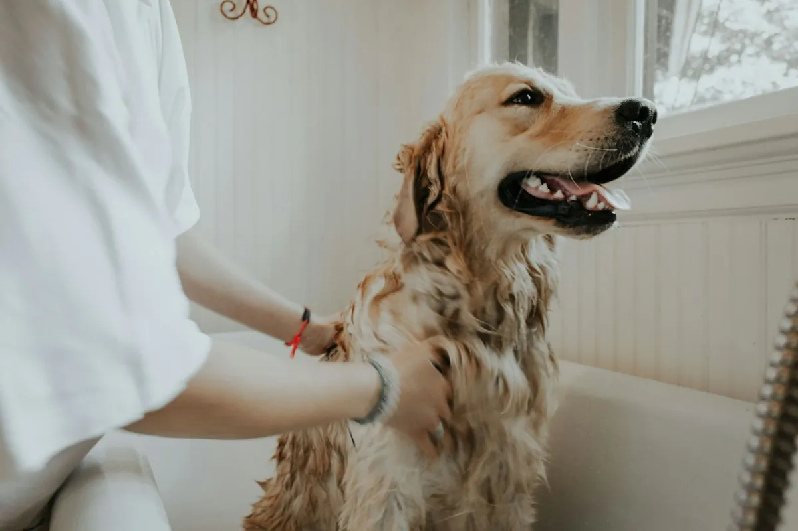

Consulta general
Un examen completo de nariz a cola: revisamos peso, piel, oídos, dientes, corazón y abdomen, y escuchamos todo lo que has notado en casa. Salimos de la consulta con un diagnóstico claro y un plan que puedas seguir.
- Examen físico completo
- Historia clínica digital
- Plan de tratamiento por escrito
- Seguimiento por WhatsApp
Cuándo venir: chequeo anual, cambios de apetito, vómito, decaimiento o cualquier comportamiento fuera de lo normal.
Pedir consulta